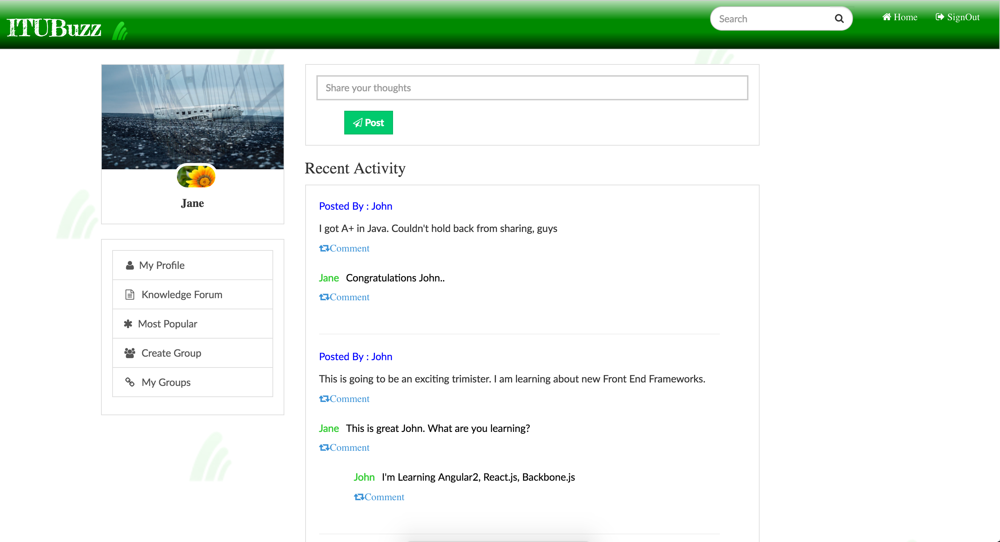
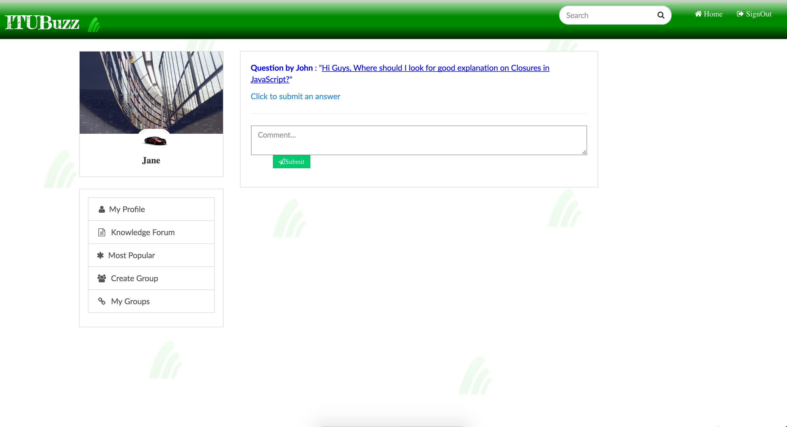
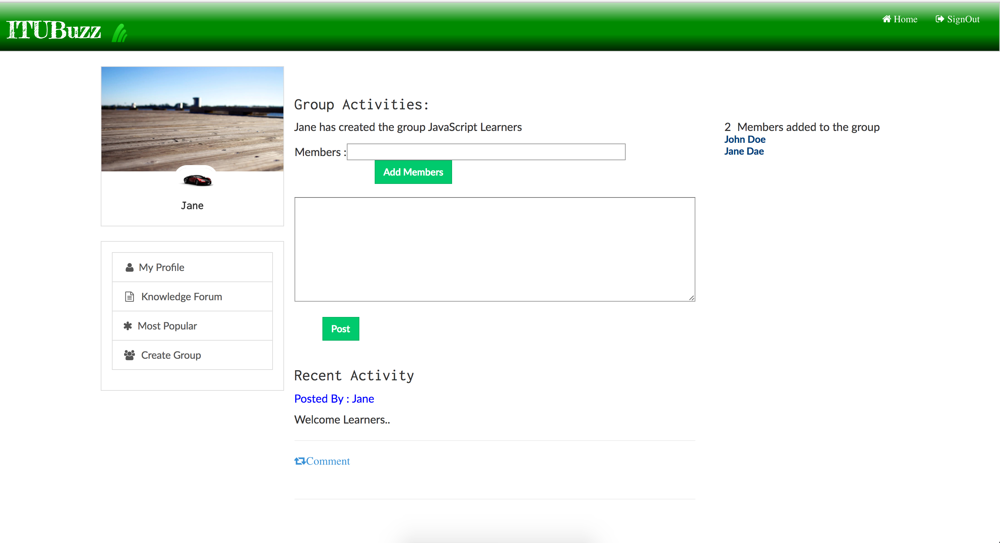
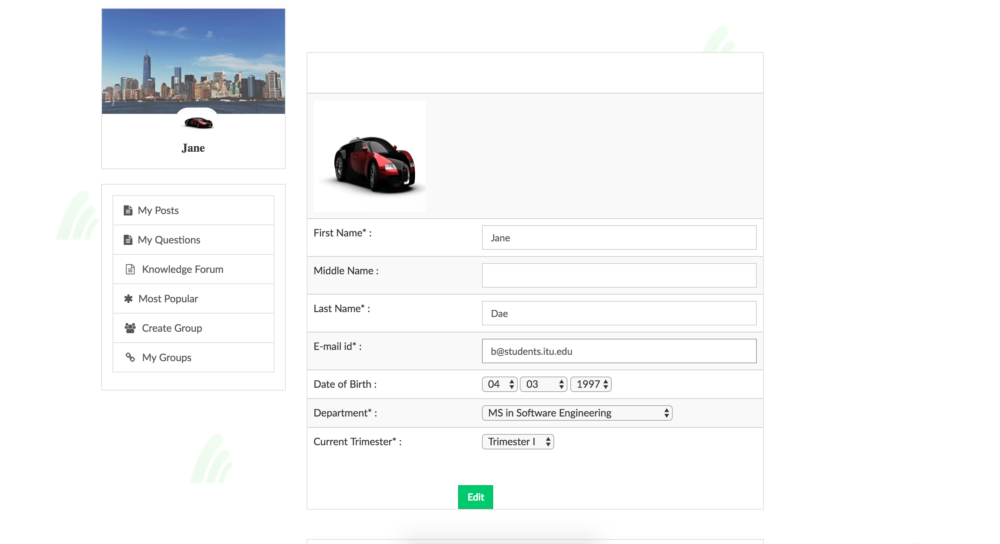
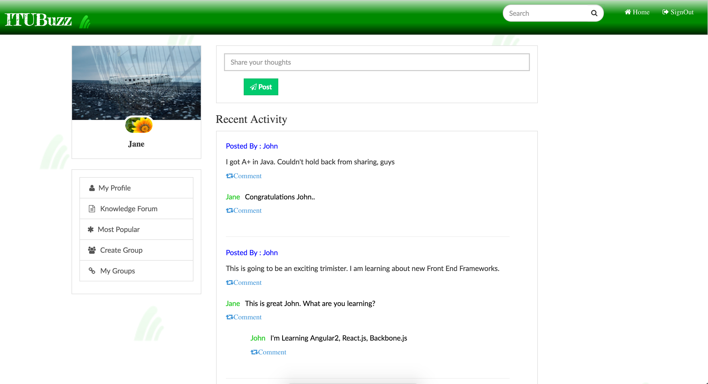
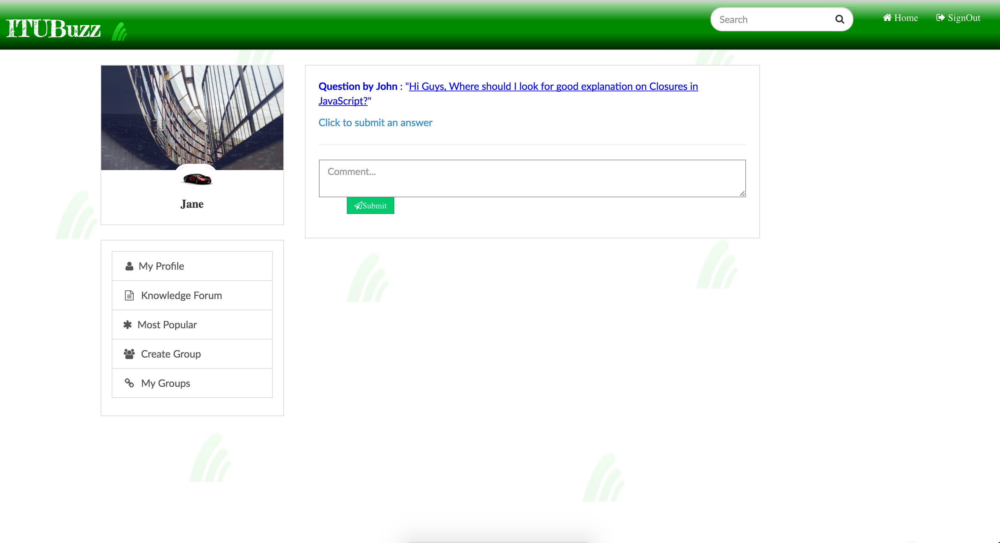
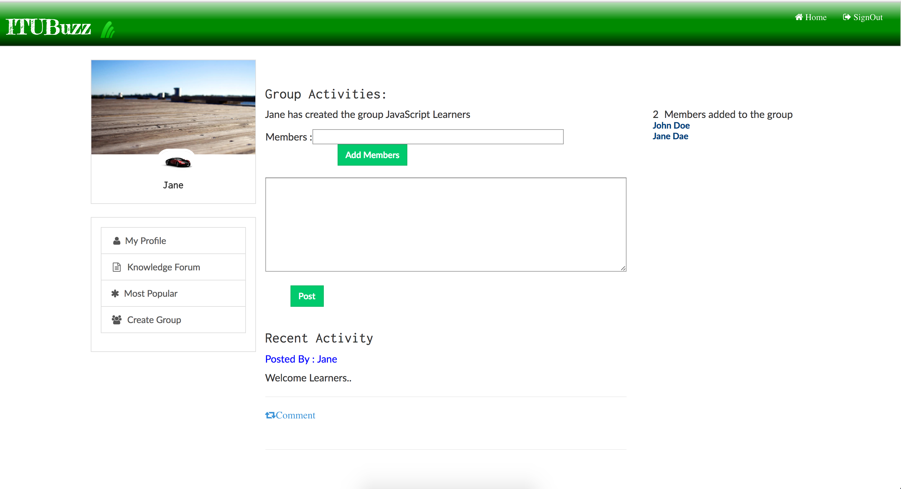
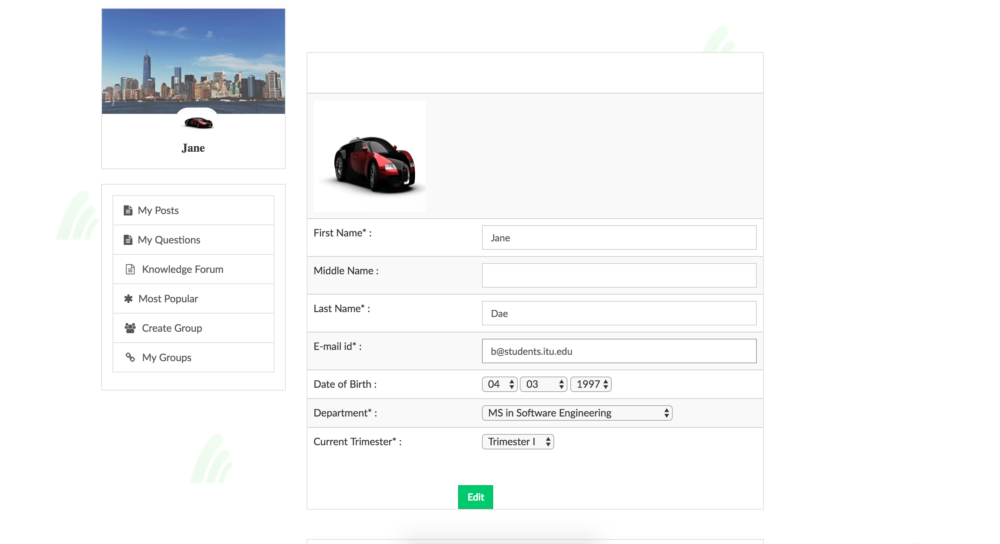

This is social networking site limited to university students and staff.
Students, alumni, faculty can socialize and share their opinions, start discussion threads,
create groups through this web portal.
Technology: JSP, Java, Servlet, JavaScript, HTML5, BootStrap3, CSS3, SQL
GitHub: https://github.com/aparnakavalgikar/ITUBuzz
 






